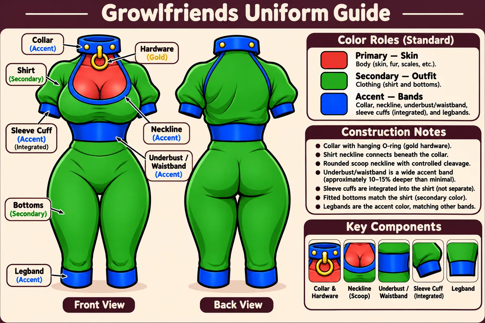
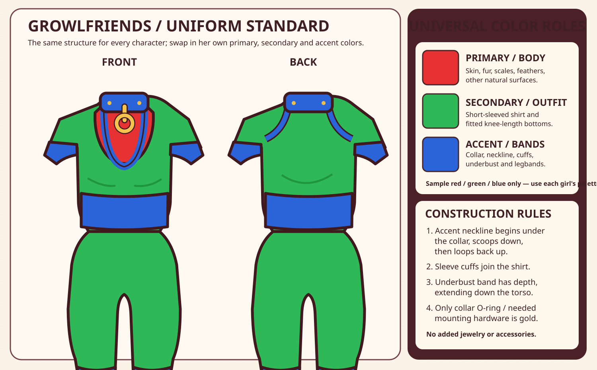

Growlfriends — Universal Uniform Construction and Color Roles
Status: Approved universal outfit visual and color-role standard, refined 24 November 2026. Applies to all Growlfriends unless the user explicitly specifies a character exception. Use alongside the expressive rendering guide and the character's own reference and approved anatomy.
Approved visual reference — use this one

Open the full-resolution approved infographic · 1536 × 1024 px. This is the preferred reference when adapting the uniform to another character. The right-hand panel is universal; this is not Bubble's assigned palette. The red/green/blue arrangement only illustrates body/clothing/band color roles.
The front and back views must be both fully readable, unwarped, and comfortably spaced. The back silhouette must not be squashed to make room for callouts, labels or panels. Keep each silhouette anatomically coherent; if another guide becomes crowded, enlarge the canvas or simplify labels instead of compressing the figure.

The most important rule: color is assigned by what a surface is, not by its location
| Role | Universal assignment | Red/green/blue demonstration |
|---|
| Primary | Natural skin, fur, scales, feathers, or other bodily material, including visible chest, arms and legs | RED |
| Secondary | Clothing fabric: fitted short-sleeved shirt and opaque fitted knee-length bottoms | GREEN |
| Accent | The pet collar, neckline piping, sleeve cuffs (formerly called armbands), deep underbust/waist band, and legbands | BLUE |
| Hardware | Only the collar's hanging metal O-ring and minimal necessary attachment pieces | GOLD |
Do not treat these red, green, and blue demo colors as Bubble's colors or as any girl's actual final palette. Each girl inherits the color roles using her own documented primary/secondary/accent swatches. Fur/scale markings and intentional individual variations are permitted only as approved exceptions.
Uniform shape and assembly
- Collar: A snug accent-colored pet collar around the neck with one hanging gold O-ring. The ring hangs visibly below the collar; it is not a central clasp and not a generic necklace. No invented earrings, bracelets, piercings, hairpins or extra gold jewelry.
- Neckline construction: Accent-colored piping originates under the collar on both sides, descends toward the chest, forms one continuous rounded scoop showing noticeable but not excessive natural cleavage, then curves upward again. The neckline piping is the accent color, *not* secondary fabric color. Do not make a cutaway bra, disconnected straps, sharp V, or a second decorative harness.
- Shirt: One opaque secondary-colored garment covering both shoulders, with short sleeves and a continuous bust/front section. The chest is natural primary color only within the neckline's opening; elsewhere the colored area is fabric. Fit reflects approved Sandy/Mallow bust weight and material rendering. No invented crop top/bikini.
- Sleeve cuffs: Accent-colored bands are integrated into the ends of the shirt sleeves, not loose floating armbands on exposed skin. Only a single accent cuff per sleeve; never double-stack two colors.
- Underbust band: A single substantial accent-colored band immediately below the weighted bust. It extends downward along the ribcage, wider than the initial narrow strip, approximately 10–15% deeper than the prior approved working diagram. Its width tapers naturally with the torso; do not separate it from the shirt, and do not move the bust to achieve the band change.
- Bottoms: Opaque secondary-colored, close-fitting knee-length bottoms continuing uninterrupted to integrated accent-colored legbands at the knees. They are not panties, shorts, bare legs, stockings, or separate tights unless specifically requested.
- Back: Same sleeve cuff integration, collar, underbust band depth, fitted bottoms and legbands. There is no cleavage on the back. Preserve structural continuity from front to rear.
What must remain stable on future adaptations
- Shared Sandy anatomical geometry (where applicable), not a new shape for each girl.
- Distinct head/species identity and individual palette: read each girl's approved reference first.
- Outfit construction and color roles above. Hair and fur pattern variations must not silently recolor fabric.
- Clean, expressive burgundy linework and deliberate broad cel-shade shapes.
- No added character, jewelry, or props in stand-alone outfit studies.
- For image-based guides, no character-name label or character-specific palette unless deliberately requested.
Common mistakes to reject
- Shrinking, squeezing or distorting a body or rear-view silhouette to fit a busy information panel; instead prioritize spacing and legibility.
- Labeling primary color as the shirt rather than the body.
- Labeling secondary color as the collar/neckline rather than clothing.
- Labeling accent color as arbitrary highlights rather than the bands and trim.
- Confusing exposed cleavage skin with neckline fabric.
- Leaving green/red intermediate rows above an accent-colored cuff: the cuff is a single accent-colored unit attached directly to the sleeve.
- Making a narrow belt at the waist instead of a deep underbust band.
- Drawing a camisole/crop-top with briefs instead of short sleeves plus knee-length bottoms.
- Inventing additional jewelry, studs, charms, floral accessories or hair decorations.
- Copying the Mallow sample's skin/fur or Connie's feathers to another species.
Production prompt fragment
Use the approved Growlfriends universal outfit construction. Primary = natural body, secondary = shirt and opaque knee-length bottoms, accent = pet collar, continuous scoop-neckline piping from beneath the collar, integrated short-sleeve cuffs, substantial underbust band and knee legbands; gold = hanging collar O-ring only. Keep one continuous clothing system and preserve the girl's approved anatomy, species, identity, palette and current framing. Do not borrow another character's colors, invent accessories, create a crop top, detach sleeve cuffs, or expose the legs above the knee cuffs. Follow the approved expressive-cartoon rendering guide.
Visual reference provenance
Approved illustrated checkpoint: generation ID 41411d28-b90e-4fa2-bb44-45ebb0630604, created after a deliberate legibility revision to avoid a cramped layout and warped rear silhouette. The repository contains a full-resolution 1536 × 1024 WebP rendition at assets/style/growlfriends-uniform-guide-approved.webp. This is a visually equivalent image encoding of the original PNG, not a vector reconstruction; the chat's original PNG remains the source image. Use this illustrated reference as the authoritative uniform guide graphic. The SVG is only a lightweight editable schematic for color-role semantics and must not override the approved image.
Authority: user-approved character designs > this uniform construction and color role convention > miscellaneous generation prompts.